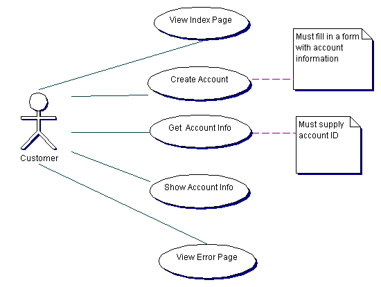
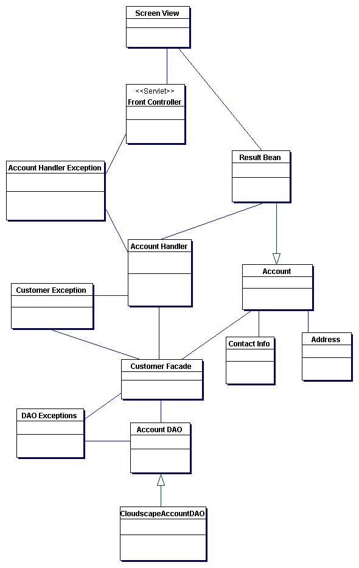

| Customer Mini-Application > Architecure |
This application allows browser clients to create new accounts by filling in some fields in a form and submitting the form. The account data will be persisted in a database. The customer can also view existing accounts by supplying an account identification key, ID, and submitting the ID. When the customer enters a new account or reads the data of an existing account, they will then view either a page showing the account data, or if there is an error they will view an error page.
Note that this application is very simple and does not handle all scenarios of a full application. For instance, it does not provide any security or ability to sign on or off.
|  |
| Figure 1. UML Use Case Diagram |
This section will briefly discuss the structure of the application. Overall the application architecture follows the Model-View-Controller pattern. The design and implementation follow several other patterns. See the BluePrints patterns page for detailed information on patterns. All user requests are directed to a Front Controller Servlet which processes all requests, interacts with the data in the database, and chooses the next page to return to return to the customer. The FrontController servlet delegates the processing of creating new accounts and reading from existing accounts to the AccountHandler class. The AccountHandler reads the fields for the submitted form, acesses the CustomerFacade to access the data model, and places the return data in a ResultBean class that the ScreenView page, the showaccount.jsp in this case, uses to populate the view. The CustomerFacade is the class responsible for interacting with the data model. The data is persisted in a database. Note that the CustomerFacade uses the Factory pattern to lookup the type of AccountDAO to use. Since we are using a cloudscape database, it returns a DAO for that type of data source and the database. So data is access by the CloudscapeAccountDAO class. The CloudscapeAccountDAO has all the JDBC code used to access the cloudscape database. This is an example of the Data Access Object pattern.
|  |
| Figure 2. UML Class Diagram |
This mini-application has very simple transactional needs. The data is
only updated when a user creates a new account. In J2EE, there are several
ways to manage transactions. In this application we just use the default
capabilities of the JDBC Connection. In J2EE autocommit is set to true by
default so when a Connection is opened, an SQL operation executed on the Connection,
and the Connection is closed, then the transaction is done automatically.
Check out the Java BluePrints Web site at http://java.sun.com/blueprints/ for the latest content.